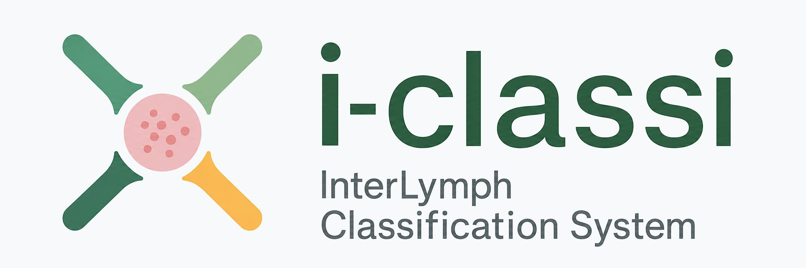

A standardized lymphoid neoplasm classification framework for reproducible epidemiologic research. Integrate InterLymph hierarchy, vocabulary mappings, and UMLS concept metadata.
140+
Disease entities
UMLS
Cached concept metadata
WHO-HAEM5
Hierarchy support